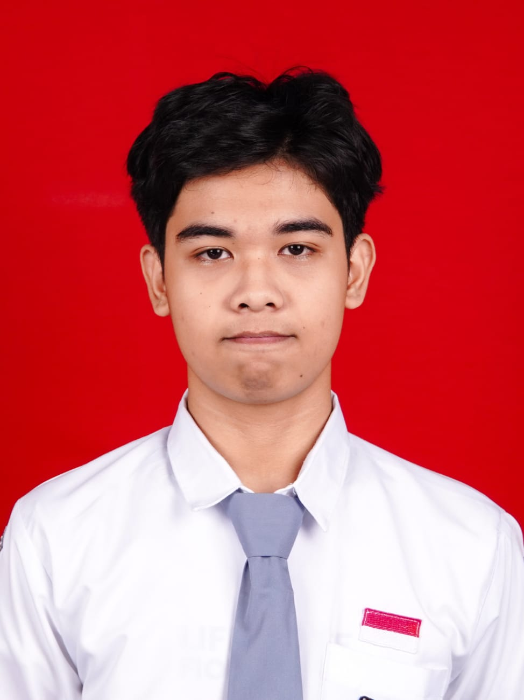
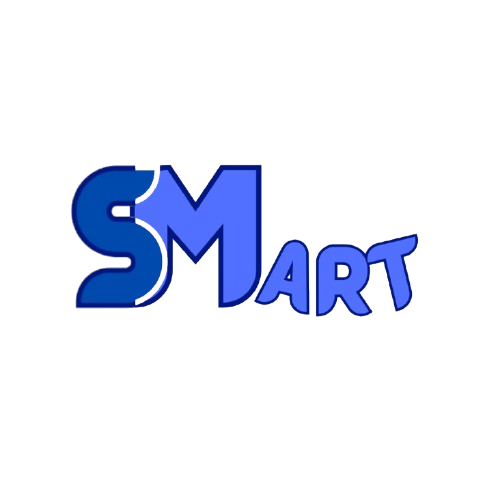
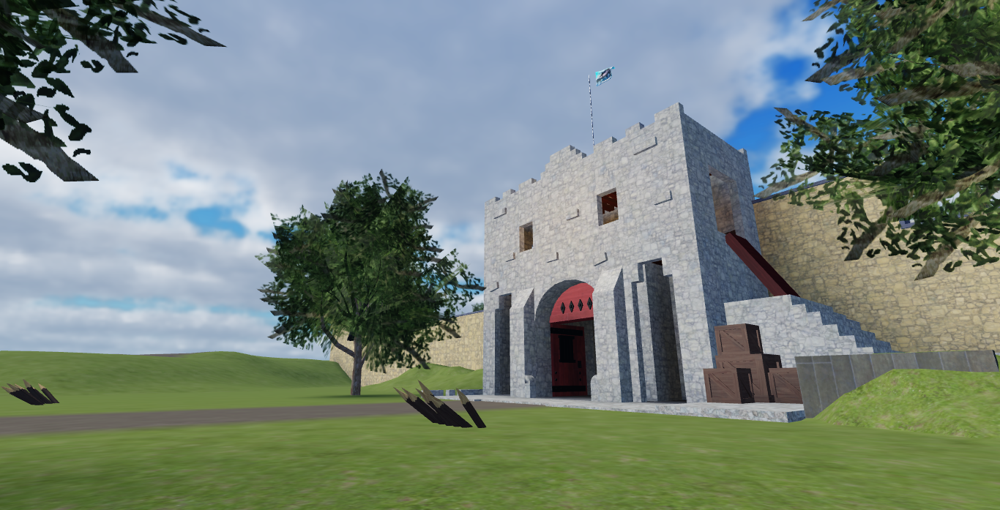

Halo, perkenalkan saya
Saya adalah seorang profesional muda yang berdedikasi tinggi, siap membawa perspektif segar dan kemampuan analisis yang kuat ke dalam dunia kerja. Saya terbiasa belajar dengan cepat dan beradaptasi dalam tim.

Latar belakang akademis dan formasi ilmu saya.
MANAJEMEN PERKANTORAN dan LAYANAN BISNIS
Fokus pada proses, penyelesaian masalah, dan nilai yang dipelajari.

Proyek riset/pengembangan website untuk mempermudah proses transaksi dan manajemen produk di Student Mart SMK NEGERI 4 JEMBER.

Merancang, memprogram, dan memonetisasi game interaktif di platform Roblox Studio hingga mencapai fase akhir siklus rilis.
Saya terbuka untuk peluang karir dan diskusi profesional. Temukan saya di: